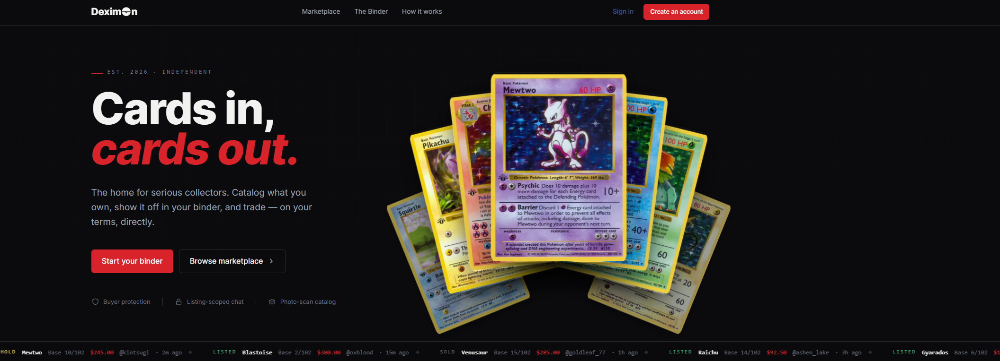
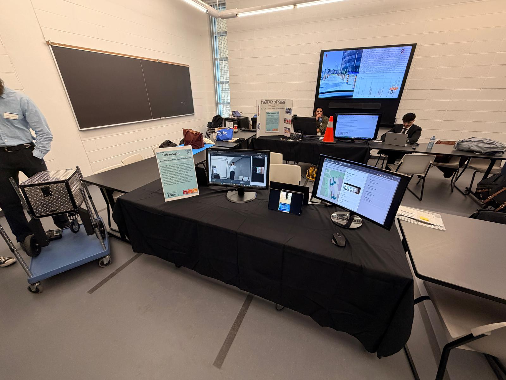
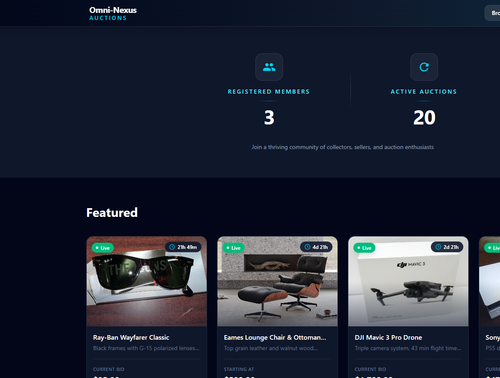

CompTIA · Earned 2026
Security+
Threats, architecture, secure operations, risk, and incident response fundamentals.
Verify credentialFinal-year software engineering student · Available January 2027
I’m Neel, a Software Engineering student in York University’s Cybersecurity Stream. I work across backend engineering, AWS cloud, and applied security—from Spring Boot microservices to real-time edge platforms and cryptographic systems.
Built with
Credentials
Industry credentials, applied in practice
My certifications reinforce the systems work I build: understanding the cloud platform, securing the architecture, detecting threats, and responding to incidents methodically.
CompTIA · Earned 2026
Threats, architecture, secure operations, risk, and incident response fundamentals.
Verify credentialAmazon Web Services · Earned 2026
Cloud concepts, core AWS services, security, architecture, pricing, and support.
Verify credentialSecurity Blue Team · Earned July 2026
Practical 24-hour incident-response exam covering phishing analysis, threat intelligence, digital forensics, SIEM, and incident response.
Verify credentialSelected work
Systems that leave the diagram
My strongest projects connect multiple layers—devices, services, databases, security, and UI—into a working whole.

Repository architecture
Source-backed architecture · EECS4314 team project
A full-stack social platform for Pokémon TCG collectors with secure accounts, digital binders, card scanning and matching, marketplace listings, listing-based conversations, notifications, and seller reviews.
Demo hosting: the AWS EC2 instance is started on demand to control operating costs, so the live site may occasionally be offline.

UrbanSight is a Jetson Nano edge system that turns camera detections into structured plate events, enriches them with GPS metadata, and streams them to an AWS-hosted backend and live React dashboard.
Implemented the cross-network backend connection and operator controls that link the monitoring interface to the live parking system.

A backend-driven auction marketplace organized across six Spring Boot services for users, catalogue, auctions, payments, AI assistance, and gateway routing—with isolated MySQL schemas and JWT-protected access.
Built the API-gateway and user-security path—including TLS, token/session handling, and authentication flows—then contributed integration and Docker fixes.
Detection engineering
Ingested Windows and Linux telemetry into Splunk and ELK, simulated controlled attack activity, and built detections mapped to MITRE ATT&CK.
Applied cryptography
Implemented DH and symmetric KDF ratchets in Python to derive unique per-message keys, supporting forward secrecy and break-in recovery.
Hardware security
Built the AES encryption and decryption pipeline at register-transfer level, including key expansion, round transforms, memory, and FSM control.
Application security
Identified SQL injection paths in a personal full-stack app, then remediated them with parameterized queries and stronger input validation.
Experience
Measured improvements, practical users
Sep — Dec
TJX Companies · Mississauga, Ontario
Jun — Aug
Manefa Contracting · Brampton, Ontario
Technical stack
Languages, frameworks, cloud & security
I’m most effective when I can trace the complete path—from protocol and service logic to deployment, telemetry, and the interface a person actually uses.
Languages
Frameworks & backend
Cloud, data & delivery
Security & systems
Lassonde School of Engineering · York University
Cybersecurity Stream · September 2022 — December 2026
Résumé tracks
Role-specific detail
Each version emphasizes the same engineering foundation through a different hiring lens.
Software engineering
Cybersecurity
Security engineering
Cybersecurity operations
Cyber defense
Hardware engineering
Let’s build something dependable
I’m completing my Software Engineering degree in December 2026 and am open to full-time opportunities beginning January 2027.
neelmu12@gmail.com